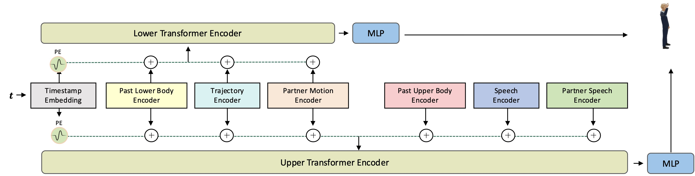

Realistic two-person interactions require synthesizing dynamic, interdependent motions that respond to speech, scene context, and mutual influence. Prior work—limited to single-person, upper-body gestures in static scenarios—fails to capture the full-body coordination (e.g., working together) and causal reciprocity (e.g., nod triggering a smile) inherent in real-world conversations. Key challenges include the combinatorial complexity of modeling bidirectional speech-motion influence and maintaining long-term consistency in open-ended interactions. To address these challenges, we propose a novel two-stage framework. First, a large language model (LLM) parses speech and scene context to infer coarse movement intentions (e.g., "approach," "sit"), which are translated into root trajectories for both characters. Second, a block autoregressive diffusion model synthesizes full-body motions for both characters, conditioned on speech, past interactions, and trajectories. A dual-stream architecture models mutual reactivity, while trajectory-aware normalization grounds motion in context. Our framework balances the strengths of autoregressive and diffusion models, enabling low-latency, high-quality motion generation over arbitrary durations. We also curate InterAct++, a dataset of dyadic interactions with speech, full-body motion, and diverse scenarios. To our knowledge, this is the first method capable of generating interaction-aware, long-form motion for two characters directly from speech. Experiments show superior performance over state-of-the-art methods. Our results highlight the potential of LLMs for zero-shot motion planning in applications such as animation and social gaming and AR.
The block autoregressive system
The multi-condition encoder
We enrich the two-person conversational motion dataset with a wider array of interaction patterns. The enriched dataset includes physical actions such as hugging, handshaking, waving, grabbing the other's hand, patting, and giving high-fives. For each action, 10 scenarios containing plausible situations in which the action may be performed are devised, and each scenario is recorded 4 times for data completeness (twice with actors sitting, twice with actors standing). The newly collected data has a total of 402 clips and 1.7 hours. We call the enriched dataset as InterACT++.
The comparison of the InterACT++ dataset with the existing speech2motion datasets
Sample clips from the InterACT++ dataset
Due to the complexity of the real-world conversational scenarios, it's challenging to collect all possible trajectories for each action. To address this, we use LLM as zero-shot trajectory prompt planner to generate a high level sparse spatial points at first, and then use a diffusion-based trajectory refinement model to generate a dense motion trajectory.
Different from previous seq2seq co-speech motion generative models, our motion generator is auto-regressive and can generate motion in an online manner. Benefiting from the diffusion-based motion synthesis model, our system can generate more natural motions more efficiently. There are few main insights in the AR model vs. seq2seq model:
We demonstrate the effectiveness of our system to generate two-person conversational motions, in more dynamic and interactive scenarios, in the following experiments.
The evaluation on the InterACT++ test set
Comparison with Other Co-Speech Motion Synthesis Methods
Results on the wild audio
Using the prompt:
"They stand in front of each other and talk"
Using the prompt:
"They are walking in a room"